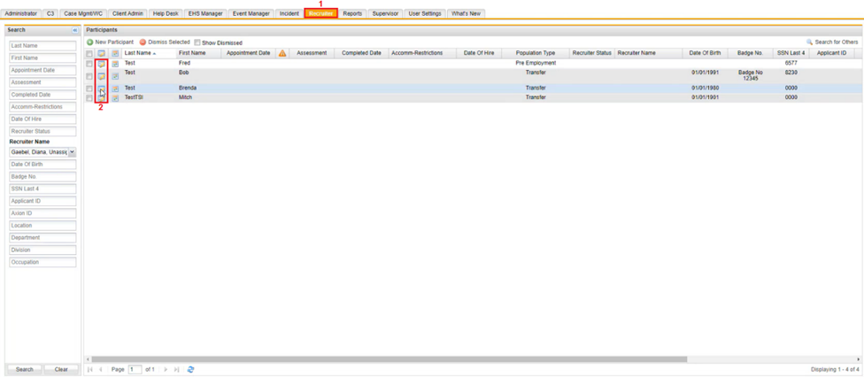
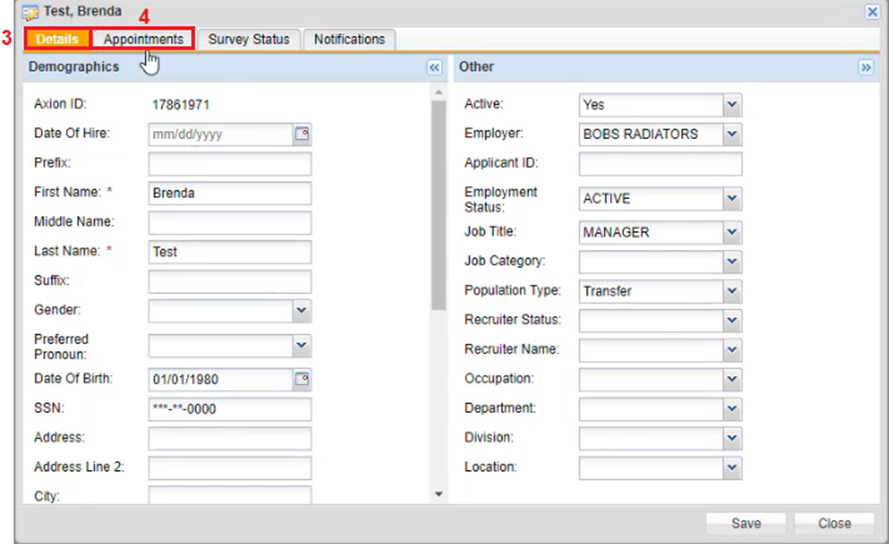
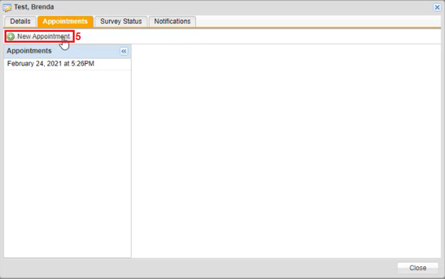
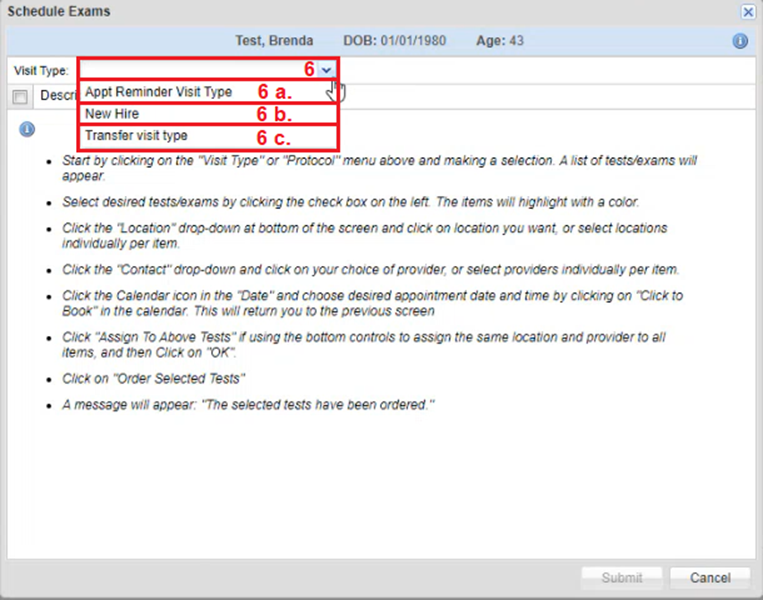
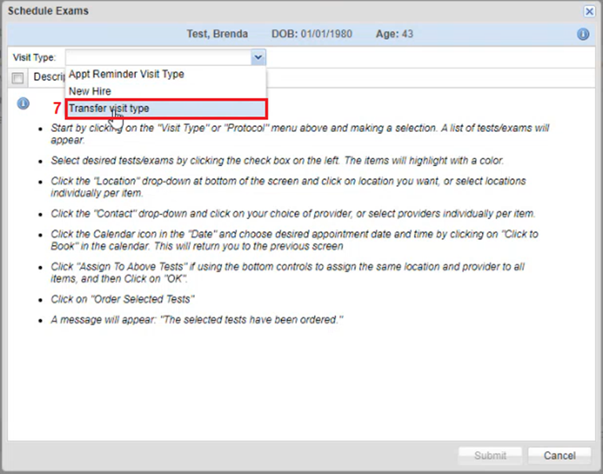
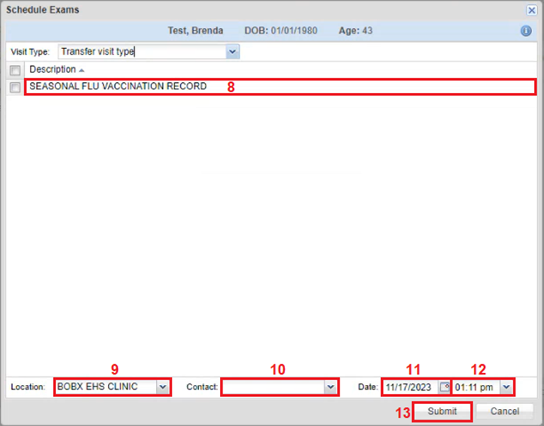

Click the Recruiter tab on the horizontal navigation panel.
In the Participants section, click the Edit icon of a participant that has a population type that is either transfer or rehire. The Visit Type window opens.

The Visit Type window by default will open on the Details tab, which displays the participants information.
Click the Appointments tab. The Appointments window appears.

On the Appointments window click New Appointment. The Schedule Exams window appears.

On the Schedule Examswindow, click the Visit Typedropdown textbox and select one of the following:
Appt Reminder Visit Type
New Hire
Transfer Visit Type

Once a Visit Type is selected a list of visit types specific to that selection will appear.

Select a Visit Type.
Click the Locationdropdown textbox and select a location.
Click the Contact dropdown textbox and select a contact.
Click the Date dropdown textbox and select a date.
Click the Time dropdown textbox and select a time.
Click Submit. The Visit type window will redisplay on the Appointment Tab.

On the Appointment tab, the appointment appears under the Appointment section.